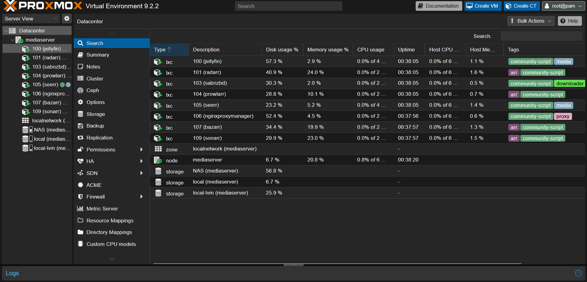
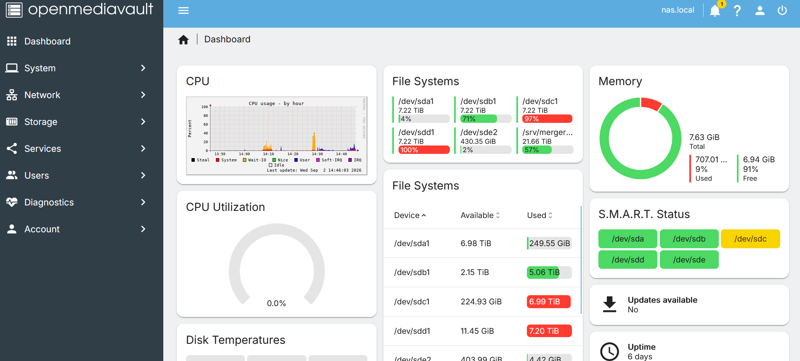

System Integration Topology
End-to-end request flow from reverse proxy termination through automated indexers, download clients, storage pooling, and media serving.

End-to-End Request & Execution Lifecycle
- Client / User Request: The client issues a secure request to stream or download media.
- HTTPS Reverse Proxy: The request travels through Nginx Proxy Manager which routes traffic to Seerr or Jellyfin.
- Trigger Request: Seerr processes the user request and sends a REST API payload to Sonarr (TV) or Radarr (Movies) to add the requested media.
- Download Job: Sonarr/Radarr queries indexers via Prowlarr, evaluates the indexed releases, and sends a download task to SABnzbd if a release matches the configured quality profile.
-
Write to NFS: SABnzbd fetches the media release, extracts the files, and writes the completed download to the NFS mount of OMV, located in
/mnt/storage/downloads/complete/. -
Hardlink: Sonarr/Radarr detects job completion, creates an instant zero-copy hardlink from
/mnt/storage/downloads/complete/to/mnt/storage/data/media/, and triggers Bazarr to search and download matching subtitles. -
Read Media: Jellyfin monitors the media libraries within
/mnt/storage/data/media/, reading structured files over the local network, and rendering streams using Intel QuickSync hardware transcoding.
Pipeline Architecture & Component Breakdown
Zero-Copy Hardlink Execution
Configured mergerfs storage pools across OpenMediaVault NFS mounts. By aligning root storage paths, the automation stack issues instant filesystem inode references (hardlinks) from scratch space to production libraries without duplicate disk writes or cross-network copies.
Hardware-Accelerated Transcoding
Provisioned Intel QuickSync GPU passthrough into unprivileged Proxmox LXC containers. Configured Linux device node permissions (/dev/dri/renderD128) to execute real-time video transcoding via VAAPI hardware pipelines with minimal CPU overhead.
Reverse Proxy & Network Isolation
Routed all ingress control traffic through Nginx Proxy Manager to manage SSL certificates. Internal service communication resides strictly on isolated container subnets, exposing only required reverse proxy ports.
Storage Redundancy & Parity
Implemented SnapRAID parity protection alongside mergerfs storage pooling on the OpenMediaVault NAS host, protecting pooled data from single-disk hardware failures.
System Screenshots

Proxmox VE Microservice Orchestration
Proxmox VE datacenter view showcasing isolated LXC containers with low background resource overhead.

NAS Storage Pool & NFS Mounts
OpenMediaVault dashboard displaying 21.6 TB mergerfs-pooled capacity across physical drives alongside real-time S.M.A.R.T. health monitoring.